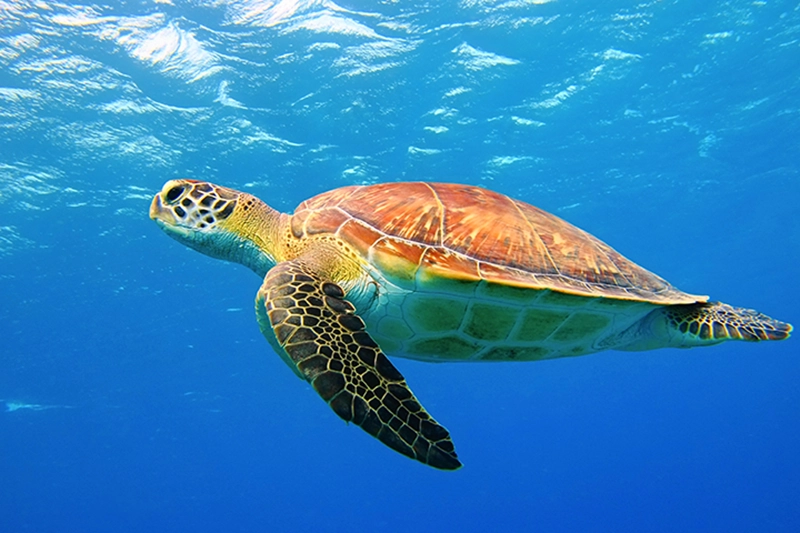

GeoPortal dos Ecossistemas de Coral de Cabo Verde
GeoPortal
Ecossistemas Marinhos
Ecossistemas de Coral
Algas
Prados Marinhos - Seagrass
Mar Profundo
Zonas Geomórficas
Reef Slope
Reef Slope
Sheltered Reef Slope
Outer Reef Flat
Plateau
Áreas Marinho-Costeiras Importantes
Áreas Marinho-Costeiras Importantes em São Antão
Áreas Marinho-Costeiras Importantes em São Vicente
Áreas Marinho-Costeiras Importantes em São Nicolau
Áreas Marinho-Costeiras Importantes na Sal
Áreas Marinho-Costeiras Importantes na Boavista
Áreas Marinho-Costeiras Importantes em Maio
Áreas Marinho-Costeiras Importantes em Santiago
Áreas Marinho-Costeiras Importantes em Brava

Rede Nacional
de Áreas Protegidas